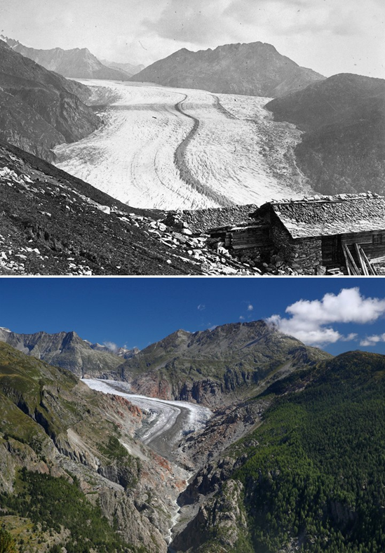

Le Grand Glacier d'Aletsch
Le grand glacier d’Aletsch est d’une beauté saisissante. C’est tout là-haut, sur les View Points Moosfluh, Hohfluh, Bettmerhorn et Eggishorn, que l’on prend vraiment conscience de la grandeur et du caractère unique du grand glacier d’Aletsch. Il est impossible de ne pas succomber à la fascination de cet immense fleuve de glace; avec ses 20 km, le glacier d’Aletsch, dont la zone d’accumulation se situe à plus de 4'000 m dans la région de la Jungfrau, descend jusqu’au front glaciaire qui se trouve à 2'500 m plus bas.
